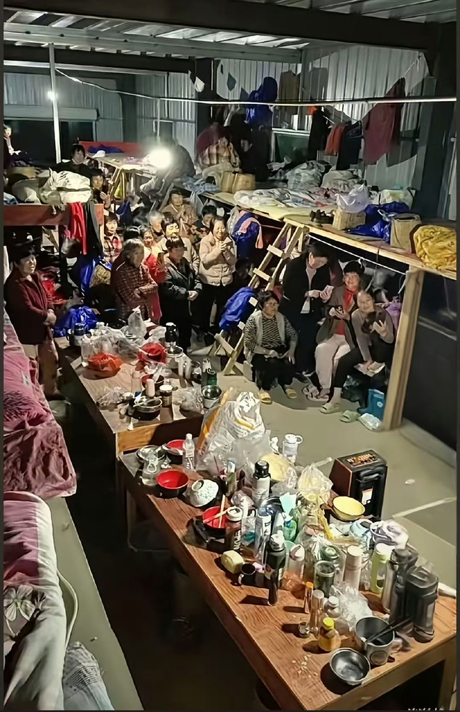

泉此方
@ci_shang85157
早上刚刚醒就刷到这个，想哭，为什么还会有这种人出现，我的政治立场一直都是中立的，不想作出太多评价，但是每次我看到这种视频我都感觉好难受，劳动人民只是想让生活过的好一点，为什么这么难，让人民过得幸福一些就这么难吗？这也不是个例，也不会是最后一例，革命尚未成功，同志仍需努力。

李老师不是你老师
@whyyoutouzhele
4月1日，浙江湖州。视频显示，采茶工人们吃着白水煮面条，十几号人挤在一间简易的铁皮房里，工人们还要哄抢食物，否则有可能吃不上。 https://t.co/p7Q4AVxgWs